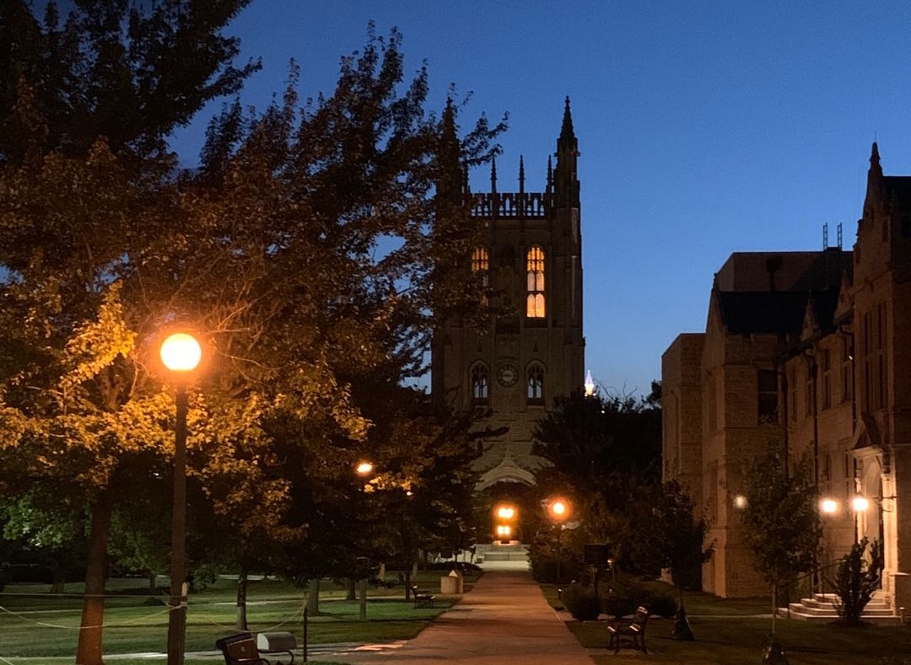

Amid the Pandemic -- Chinese Students at MU
Home
2020 Timeline
Spring 2020
Fall 2020

MU intertational students from China have been experiencing a difficult time amid this COVID-19 pandemic. What is their life like? How do they handle it?